The internet was engineered to addict your kids.
We're naming the tactics.
Real research. No panic — just the truth every parent needs to know about what happens when your child goes online.
Session 1 — The Hook
How they get you addicted
The mechanics behind why you can't put your phone down — and why your kids never had a chance.
🎰 How Social Media Hooks You Like a Slot Machine
Big Tobacco, Las Vegas casinos, and your favorite apps use the same trick — variable ratio reinforcement. Sean Parker, former Facebook president, admitted: "We knew exactly what we were doing. We exploited vulnerabilities in human psychology."
💊 The Dark Tactics of Addictive App Design
Infinite scroll, autoplay, push notifications — deliberate traps to exploit psychological triggers. Ex-Google designer Tristan Harris calls it "time on device optimization." Leaked Meta documents confirmed their algorithms amplify addictive behaviors.
🃏 The Tech Giants' Secret Playbook
Every "free" app has a hidden manual for designers: exploit FOMO, personalize bait, interrupt with streaks and fake alerts, keep infinite content flowing. This isn't bad design. It's predatory design.
🎭 TikTok — The Fastest-Growing Slot Machine in History
Every swipe is a gamble. The algorithm learns your brain in minutes, then exploits it. Over 60% of users are under 25 — teens average 95 minutes a day. TikTok calls it entertainment. Psychologists call it engineered addiction.
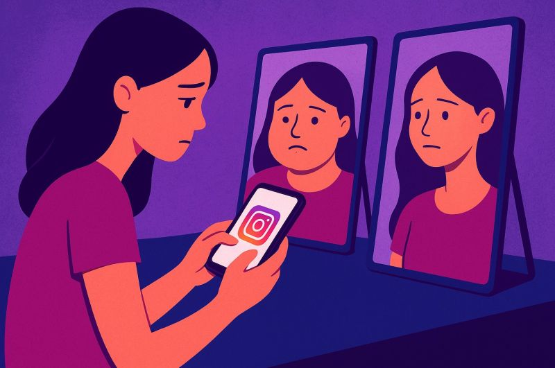
🎯 Instagram — The Illusion of Perfection
Likes give just enough validation to keep posting. Filters create impossible beauty standards. Meta's own leaked research showed 32% of teen girls said Instagram worsened their body image — and the platform doubled down anyway.
⏯️ YouTube — The Endless Rabbit Hole
Over 70% of YouTube watch time comes from algorithmic recommendations, not user choice. Autoplay is default. Stopping takes effort. Mozilla researchers found YouTube's AI regularly recommends misinformation to keep you hooked longer.
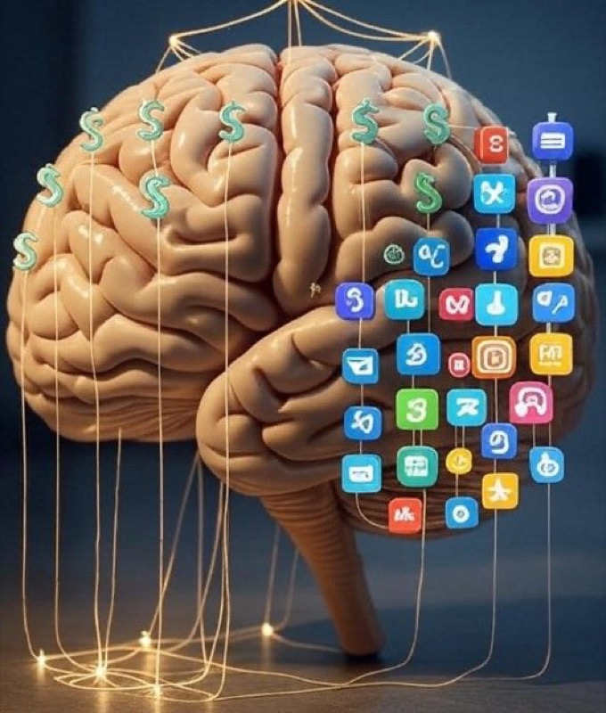
🔙 The Dopamine Economy — Your Time Is Worth Billions
You're not the customer. You're the product. Social media earned $200B+ in ad revenue in 2023 — auctioning your attention in real-time. The average user checks their phone 96 times a day.
💊 The Variable Reward Trap
Why do slot machines earn more than movies and music combined? Variable rewards. Neuroscience's most powerful reinforcement system. Predictable rewards get boring. Unpredictable rewards are addictive. Your brain learns to crave uncertainty itself.
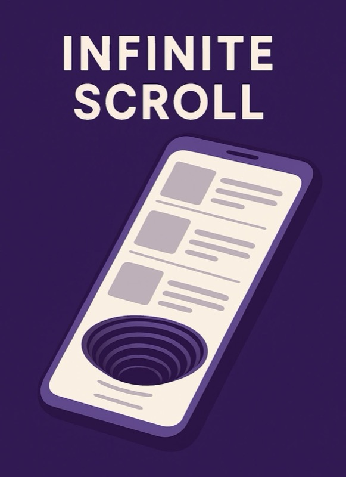
📜 Why Your Brain Loves Infinite Scroll
Invented in 2006, infinite scroll removes all natural stopping cues. The developer who built it later said it was like giving people "an endless bag of chips." No chapter end, no credits — just seamless dopamine drip.
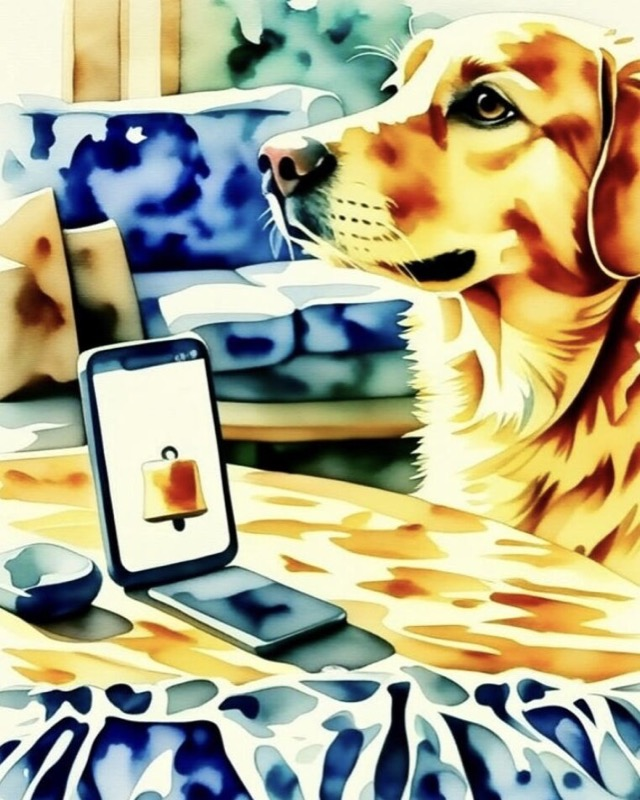
🔔 Push Notifications: Pavlov's Bell in Your Pocket
That buzz isn't random — it's conditioning. Timed for vulnerable moments. The red dot triggers urgency. Every interruption takes 23 minutes to recover from. For kids, late-night pings turn sleep into a battleground.
Session 2 — The Dealers
Who profits from your family's data
Behind every "free" app is a business model built on your children's attention, habits, and personal information.
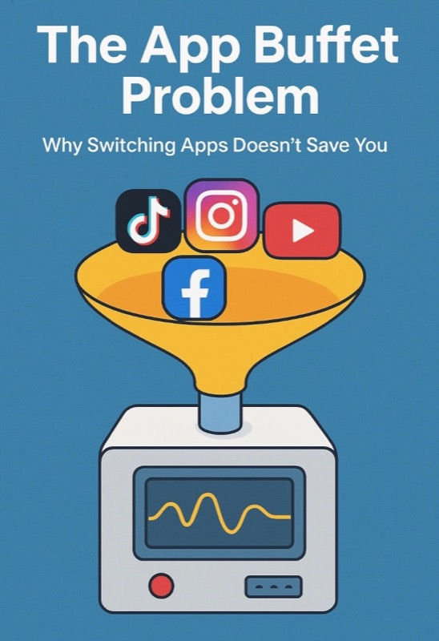
♦️ The App Buffet Problem
Closing TikTok and opening Instagram isn't a break — it's the same attention economy from a different angle. You think you're switching channels. They're really switching nets.
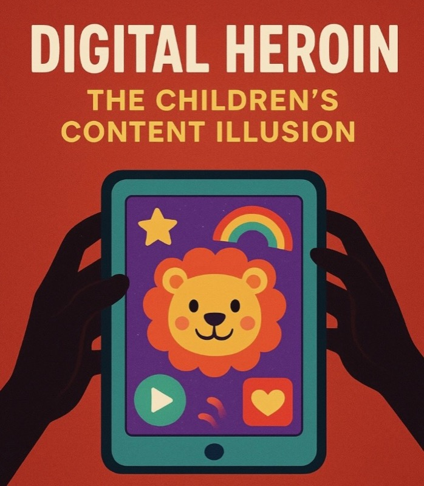
👶 The Children's Content Illusion
Bright colors and cartoon mascots promise safety — but 95% of apps labeled "educational" for children include manipulative advertising or engagement tricks. Children can't tell the difference.
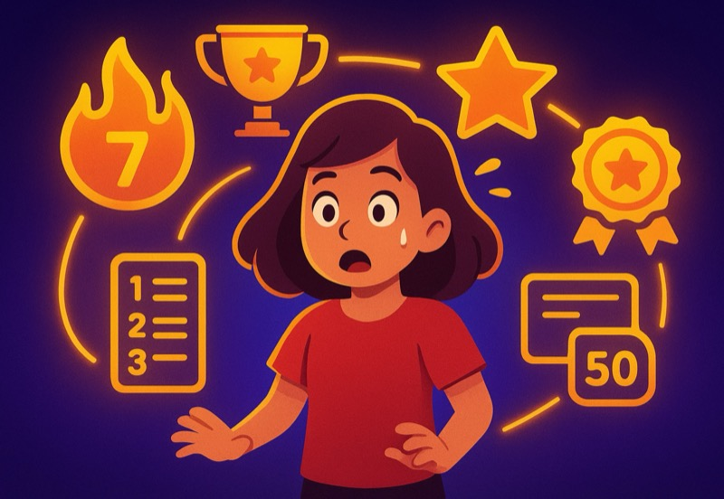
🏆 The Gamification of Everything
Snapchat streaks, Duolingo badges, Fortnite daily logins — kids log in not to enjoy the app but to keep a number alive. Learning feels like a hustle. Play feels like a job. Rest feels like failure.
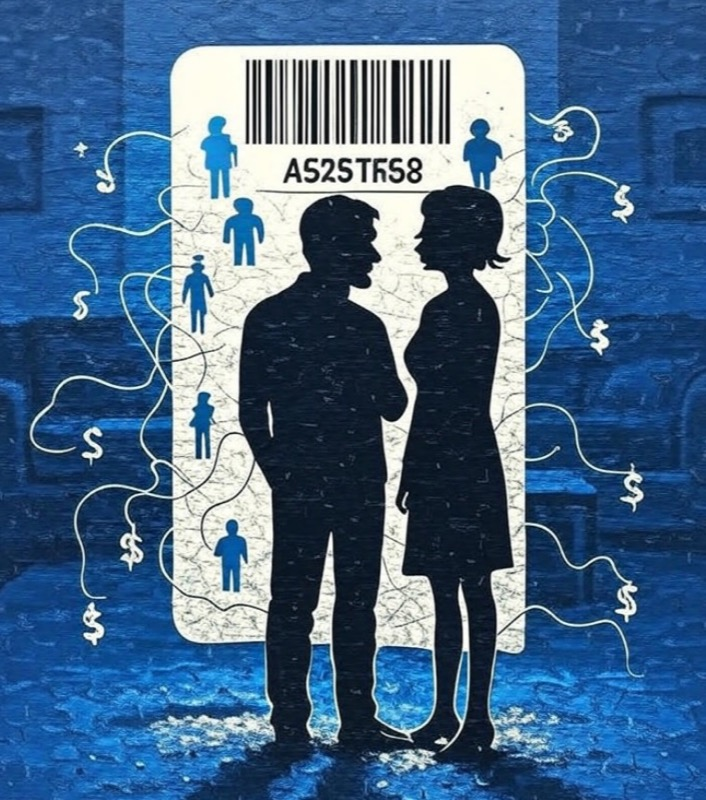
🗂️ Data Brokers Love Your Free Apps
Your data is bundled and sold like Wall Street commodities. Location, habits, political sympathies, late-night searches. By high school, your kid has an invisible digital résumé built entirely from "free" apps.
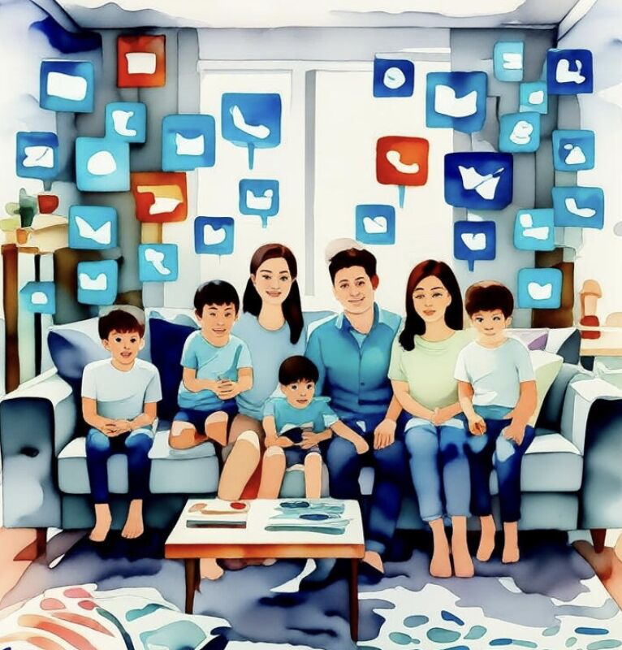
👁️ When Social Meets Surveillance
Social media is one of the most sophisticated surveillance systems ever built. Every like, pause, and DM feeds machine learning that predicts what you'll click and when you're most vulnerable.
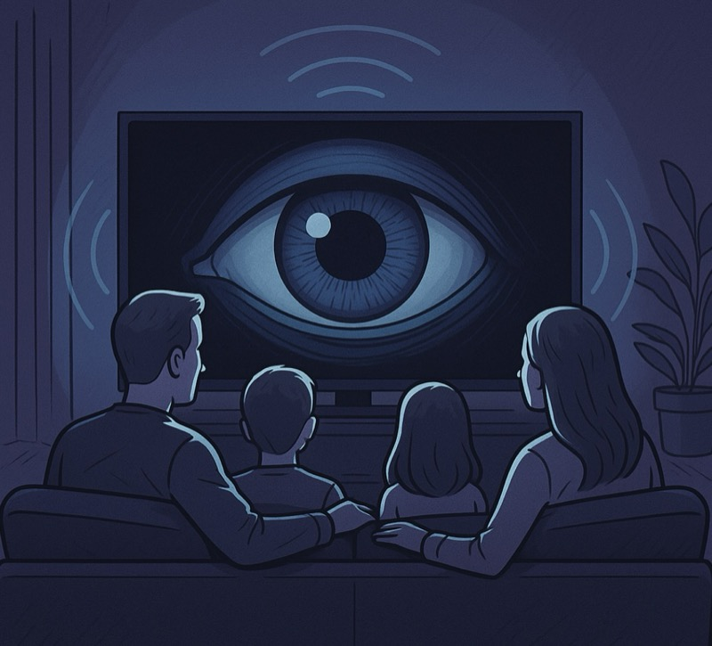
📺 The Dark Side of Streaming
Your TV isn't passive — it's watching you. Every pause, rewind, and late-night binge is logged and profiled. Streaming didn't just kill cable — it turned the family sofa into a data pipeline.
Session 3 — The Impact on Kids & Teens
What it's doing to your children
Sleep, grades, mental health, social skills, bullying — the real cost of growing up online.
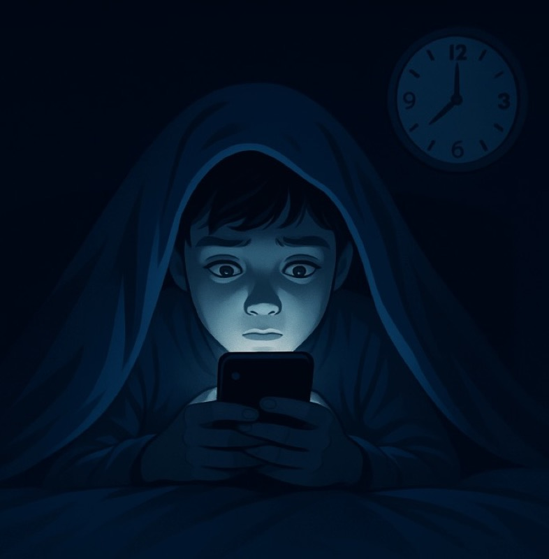
😴 Screen Time and the Sleep Crisis
Kids today sleep nearly two hours less than their parents did at the same age. Blue light tricks the brain into daytime mode. Chronic sleep loss is tied to anxiety, depression, obesity, and weakened immune systems.
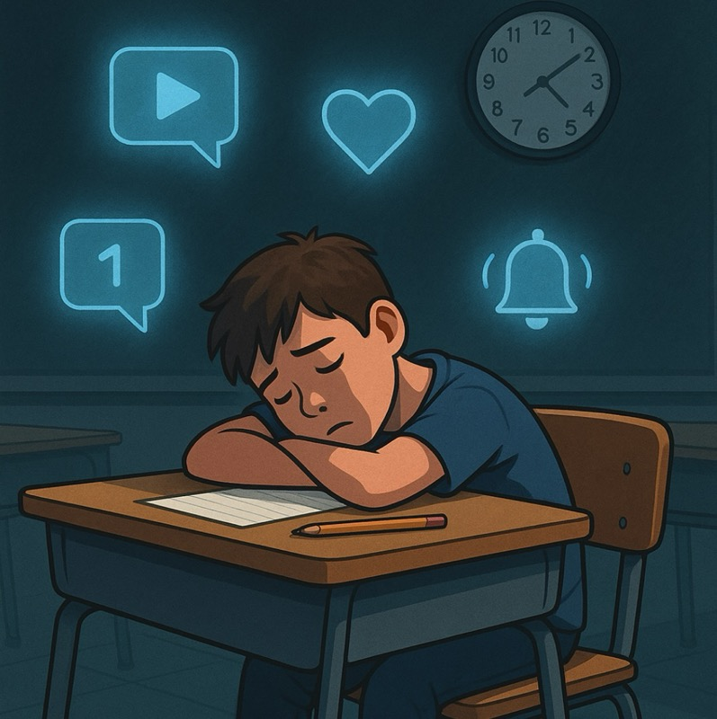
📉 Grades in Freefall
Teens who spend more than 3 hours daily on social media are twice as likely to report poor academic performance. Kids aren't lazy — their brains are too exhausted to perform. Every failure in school is someone else's profit.
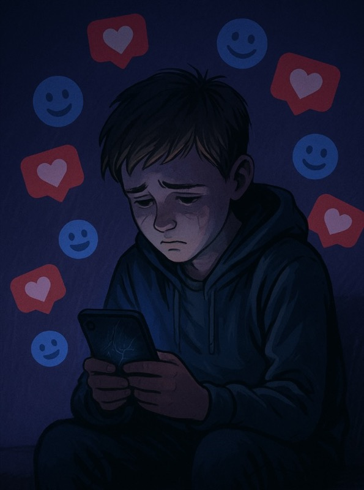
💔 Mental Health Meltdown
Teen depression has nearly doubled since smartphones became universal. ER visits for self-harm among girls aged 10–14 are up 190%. Meta's own research showed Instagram worsened body image in 1 in 3 teen girls — and they kept going.
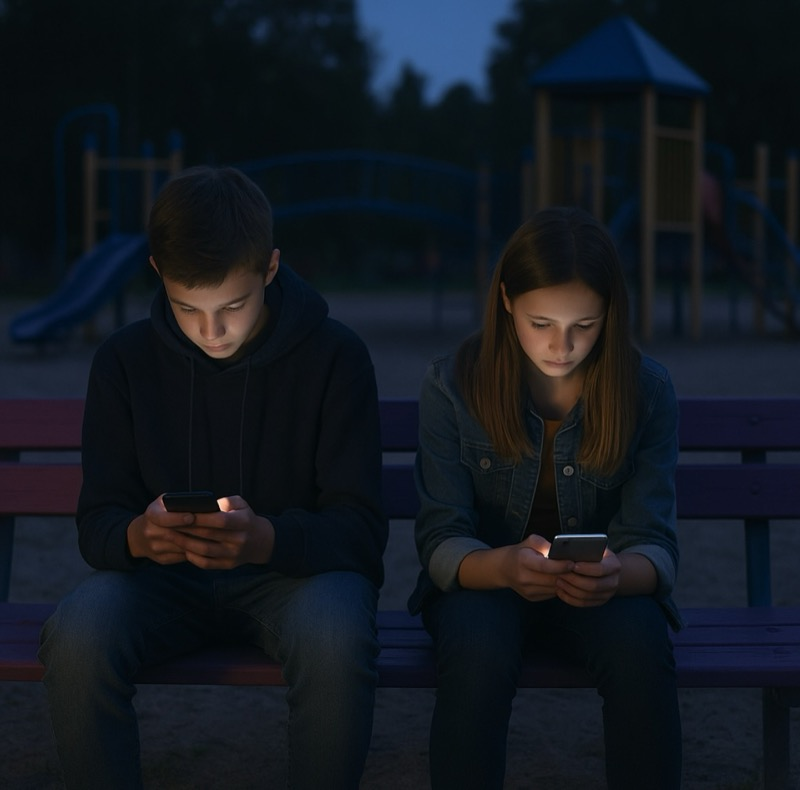
🤝 Social Skills at Risk
Kids are replacing eye contact with emojis and friendship with streaks. A child who struggles to raise their hand in class posts on TikTok without hesitation. Will this generation be ready for real conversation?
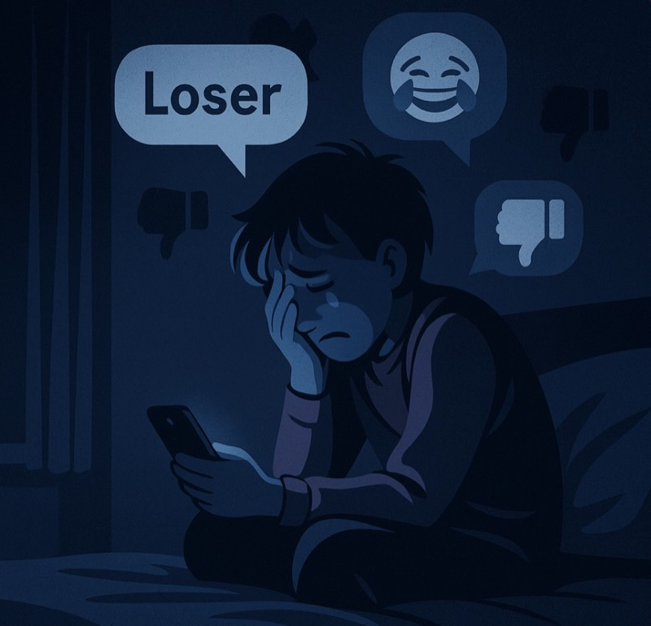
🥹 The Cyberbullying Epidemic
The playground used to close at sunset. Now bullies never go home. 59% of teens have experienced online harassment. Victims are twice as likely to attempt self-harm. Screenshots make sure the humiliation never disappears.
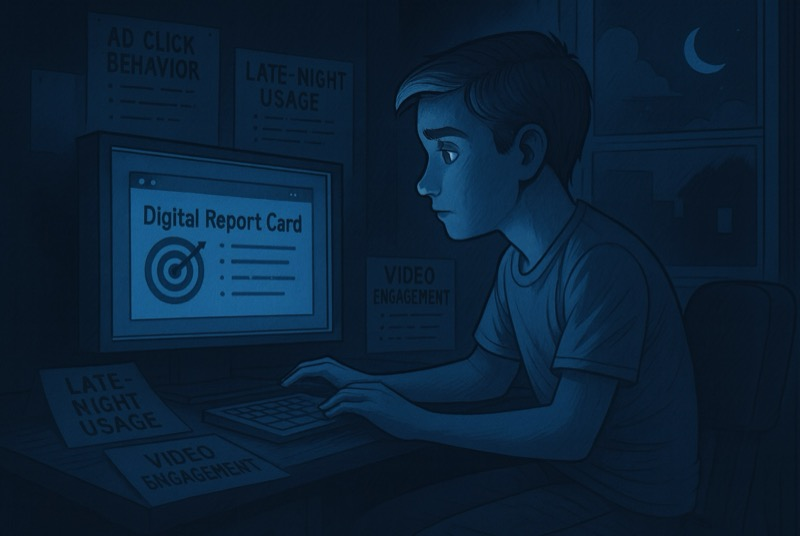
📋 The Digital Report Card You Never See
Every pause on a video, every late-night scroll builds an invisible file. It doesn't grade knowledge — it grades predictability. The algorithm is quietly deciding who your child becomes online.
Session 4 — Scams & Seniors
Two generations in the crosshairs
From loot boxes to deepfakes to fake Facebook friends — kids and seniors are the most exploited, for opposite reasons.
🎲 Gambling in Your Kid's Pocket
Over 90% of top-grossing mobile games use mechanics identical to gambling. Kids as young as 6 are learning to equate luck with skill. The casino isn't in Las Vegas anymore — it's in your child's backpack.
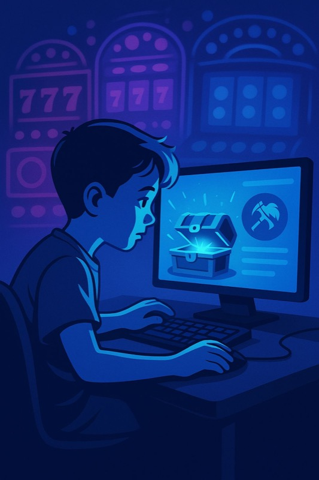
🎮 The Hidden World of Skin Betting
Game "skins" are worth real money, and kids trade them as chips on gambling sites. A 2023 study found over 20% of teens had gambled using in-game items, often without realizing it. Addiction disguised as achievement.
🦠 Malware Disguised as Fun Apps
In 2024, researchers found hundreds of Android apps secretly installing tracking code targeting children. That "game" your 9-year-old downloaded may have sent your home's Wi-Fi password to a server overseas.
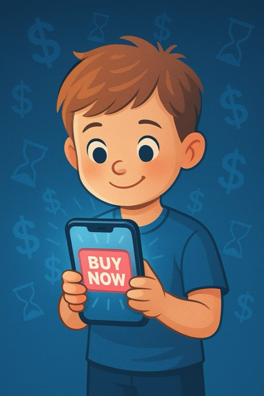
💸 The Dark Patterns of In-App Purchases
Every button, color, and countdown timer is designed to make "no" feel wrong. The Buy button glows under a character's teary eyes. The Cancel button is faded and hidden. Over 400,000 families disputed unauthorized in-app charges by children in a single FTC report.
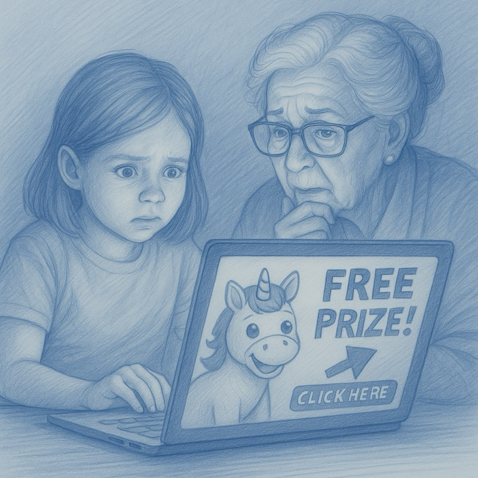
🎭 Fraudulent Websites Targeting Children & Grandparents
A cartoon panda. "FREE Robux!" A quiz to win a prize. Children enter names, ages, emails — and someone else gets exactly what they wanted. The internet is no longer divided by age. It's divided by awareness.
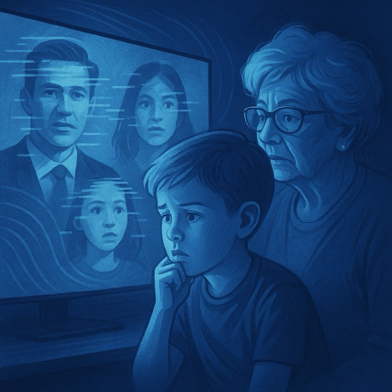
🤖 Deepfakes & Fake News — When Reality Becomes Optional
A teenager can create a convincing deepfake in under a minute. A grandparent hears what sounds exactly like their grandchild's voice pleading for help. The new rule: if it triggers emotion instantly, question it immediately.
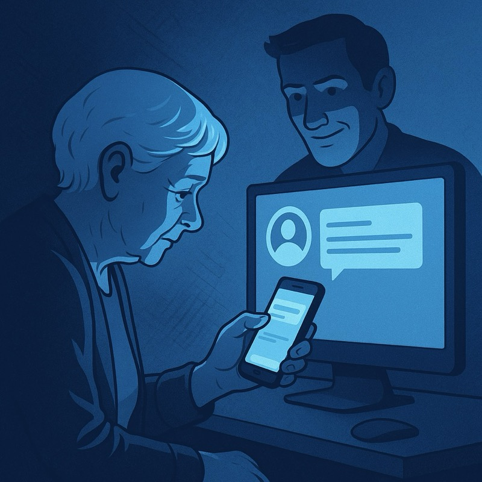
👵 Why Seniors Are Prime Targets
Seniors grew up when phones were trustworthy and strangers couldn't access private lives. Scammers exploit four vulnerabilities: trust, panic, urgency, and isolation. Seniors aren't "bad with technology." Technology is bad at protecting them.
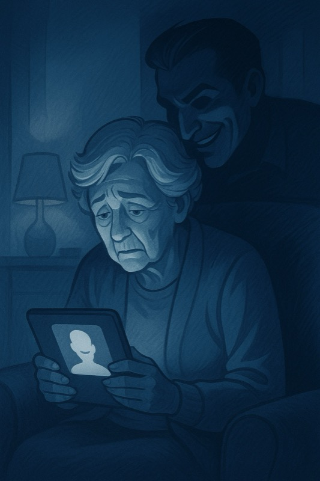
📱 The Facebook Friend Scam
A message from someone you know — the right photo, the right name. Small talk, then: "I'm stuck while traveling, could you send something small?" To a senior, it's a call to help someone they love. New rule: any money request — verify by phone first.
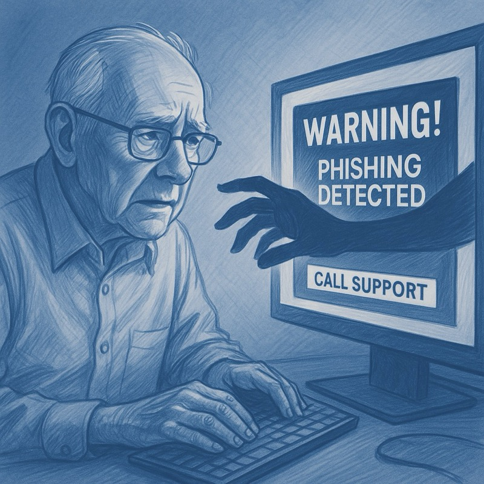
🎣 Phishing Emails & Fake Tech Support
"Your bank needs verification." "Microsoft detected a virus." Logos look perfect. Once the "fix-it" program is installed — it's remote access. Life savings, gone in seconds. Criminals aren't hacking devices — they're hacking instincts.
Session 5 — Seasonal & Systemic
Christmas scams and corporate blame
The holidays are harvest season for criminals. And Big Tech has been running the same playbook as Big Tobacco for years.
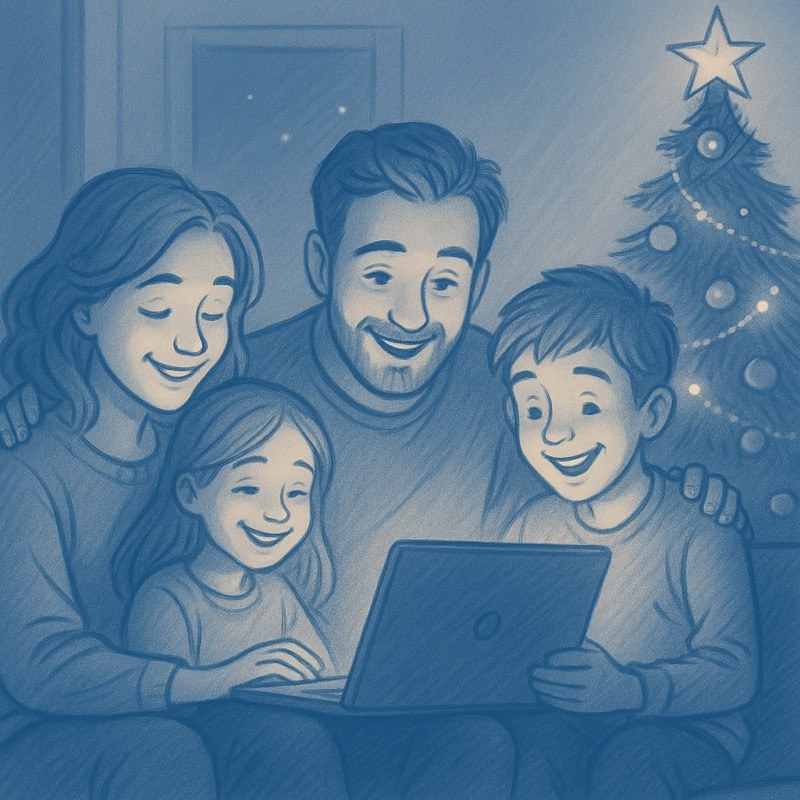
🎁 The Season of Giving (and Scamming)
For scammers, Christmas is harvest season. Fake delivery alerts, too-good-to-be-true deals, gift card scams, fake charities — all hitting when people are tired, distracted, and generous. Family rules that could save your wallet this holiday.
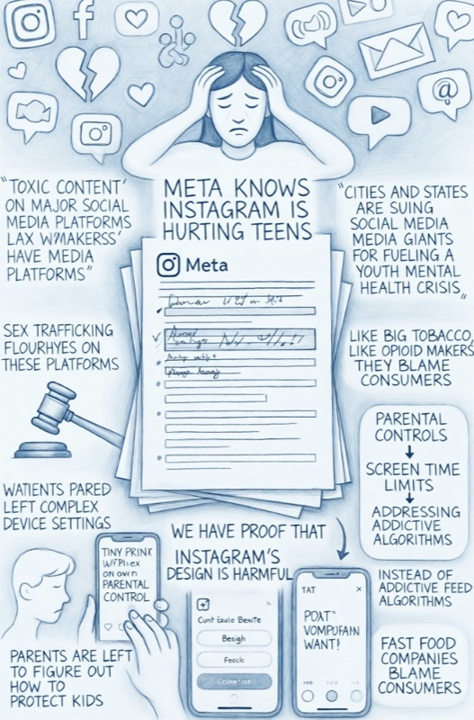
🏛️ How Big Tech Dodges Responsibility
Instead of fixing addictive algorithms, platforms offer "parental controls." Big Tobacco pushed "personal choice" for decades. Opioid makers blamed patients. Tech is following the same playbook — and parents are left holding the damage.
Session 6 — What Comes Next
Halftime. Hard questions. Real solutions.
Knowledge is the first step. But what does actual protection look like — for every device, every family member, without becoming a surveillance state at home?
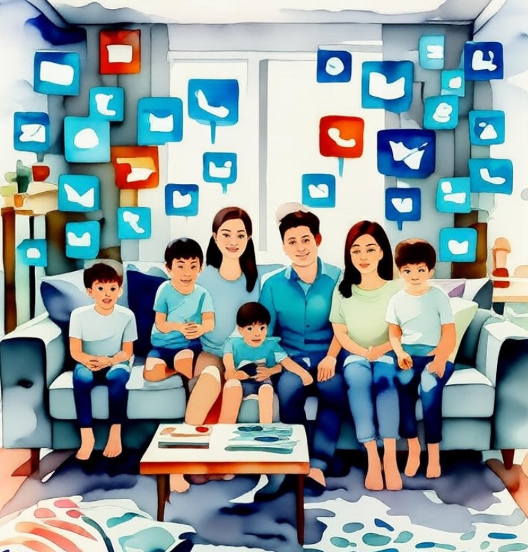
💊 Halftime — A Question for Families
We know who's behind the addiction machine. But is quitting all apps even realistic? What magic features would you want in a tool that actually fixes this? Jaro asks the community — and the answers shaped what WhiteCat became.
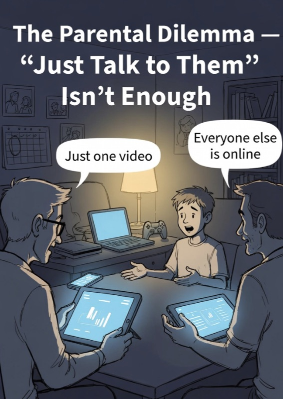
👨👩👦 The Parental Dilemma — "Just Talk to Them" Isn't Enough
You're not fighting your child — you're fighting an entire industry optimized to keep them online for five more minutes. Apps don't close. Games don't end. Videos don't stop. Parental rules don't fail because parents fail. The system was never designed to help them succeed.
Knowledge is the first step. Protection is the second.
WhiteCat is the router that quietly enforces the boundaries you set — no arguments, no browser tricks, no workarounds. Built by parents who read every one of these posts and decided to do something about it.
See Plans